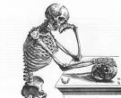

What is the Scientific Method?
"The scientific method is a process for experimentation that is used to explore observations and answer questions. Scientists use the scientific method to search for cause and effect relationships in nature. In other words, they design an experiment so that changes to one item cause something else to vary in a predictable way."
The History of the Scientific Method:
No one man can be credited for inventing the scientific method, but Galileo is given a lot of credit for the Scientific Method. He is considered the "Father of the Scientific Method" by many in our modern day. Roger Bacon (1214-1294) is one who through writings from muslim scientists, described a repeating cycle of observation, hypothesis, experimentation, and verification. The Encyclopedia Britannica says "Even while Bacon was philosophizing, the true method was being practiced by Galileo, who, with a combination of observation, hypothesis, mathematical deduction and confirmatory experiment founded the science of dynamics." So it was not just invented one day but over many hundreds of years it was perfected and tried to what it is today, a process to help us and our children Aquire New Knowledge.
Why the Scientific Method?
The best way to understand the world around us is to investigate our surroundings, Ask questions, and to explore the possibilities. We have reason, the ability to deduce, and to ponder over things. We as humans have go through the pattern of the scientific method all the time, in our daily lives. We are constantly coming aross problems and new things. We go through a process each time that helps us to learn, grow, and to improve. We must ask questions through every step in our pathway to learning more. All in all our path to aquiring knowledge is through the scientific method. "It has often been said that the greatest discovery in science was the discovery of the scientific method of discovery."
--Dr. James K. Feibleman, author of Scientific Method (1972)
My thoughts:
The Scientific Method, I consider it to be the "blueprint" to aquiring new knowledge and to expanding our understanding of the world around us. I say "blueprint" because it's our tool to help guide us in the persuit of knowledge, but we should understand that it mearly is just a process we have to help us along the way. We must use common sense and be curious in all we do. When following the Scientific Method keep an open mind, be curious, ask questions, and most importantly be honest. It is important to Keep you mind open and let those "Wheels turn" if you don't you may find yourself passing over a major/minor detail or discovery.

Curiosity is the drive for me to learn more and to grow in my surroundings. To come to a better understanding of my environment. Even as a child I have come to realize that there are certain steps one must go through to learn new things. The process that the scientific method is imbedded into us. We are human hence we have that innate ability to reason. How I have got to my level of knowledge was no just letting it come to me. I made my own Hypothesis and tested the results and outcomes. I don't think that any peticular person came up with or made up the scientific method. It's as old as us humans.